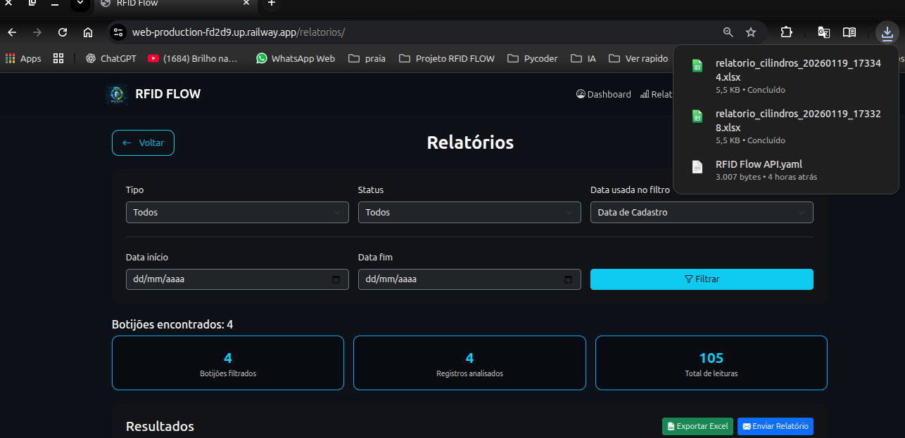
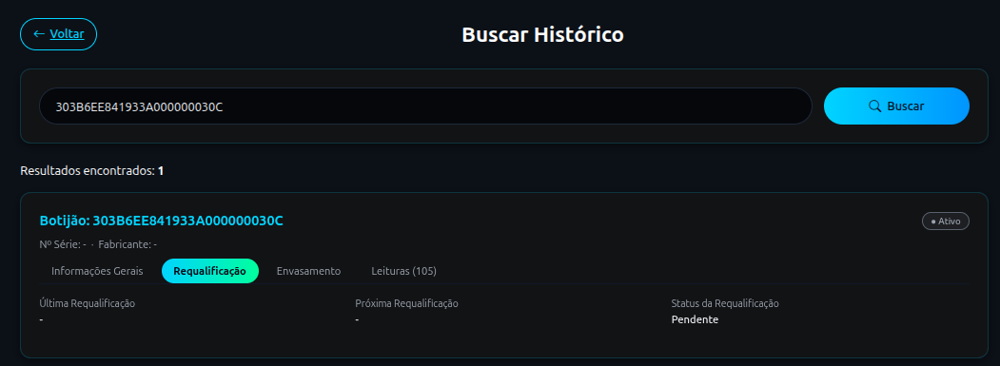
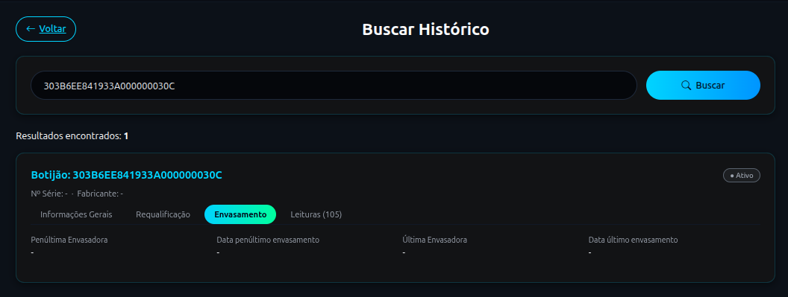
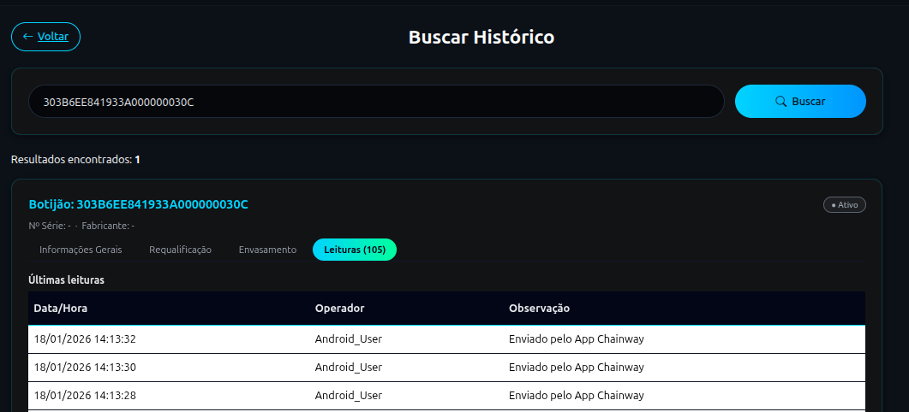
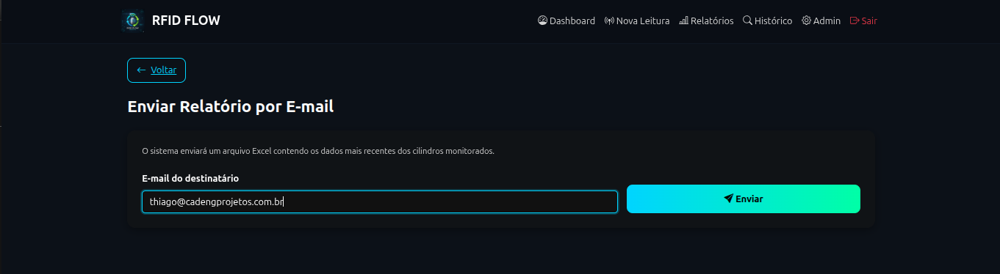
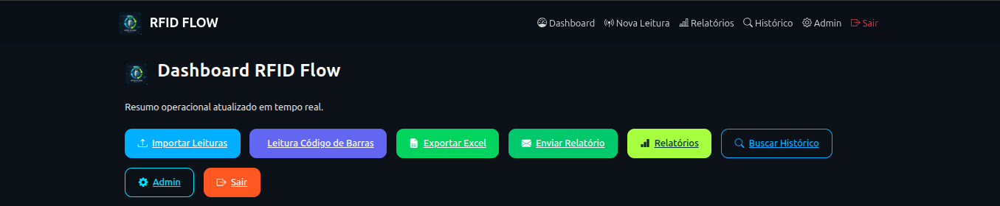

RFID Flow System
Sistema Web para gestão, rastreamento e controle operacional utilizando leituras RFID e importação manual de arquivos.
O objetivo do RFID Flow System é permitir que empresas controlem o fluxo de ativos (botijões de gás) utilizando leituras de etiquetas RFID, combinadas com funcionalidades administrativas e relatórios em tempo real.
📌 Visão Geral
O RFID Flow System é uma aplicação 100% Web, desenvolvida em Python + Django, que permite:
-
Gerenciar ativos com identificação RFID.
-
Registrar leituras feitas em dispositivos externos (leitores RFID, PDAs, coletores).
-
Visualizar relatórios operacionais, dashboards e estatísticas.
-
Gerenciar usuários, permissões, logs e auditorias.
-
Importar leituras manualmente por meio de um arquivo XLS/XLSX gerado por um dispositivo local.
-
Ler códigos de barras
O sistema é ideal para operações logísticas, industriais e distribuidoras que precisam de rastreabilidade e controle.
Infraestrutura:
- Deploy em Railway
Feature Local Integrada (Opcional):
-
Importação manual de arquivo .xlsx gerado por dispositivo RFID.
-
Leitura ocorre localmente no equipamento → arquivo é carregado no sistema Web.
Setup do Projeto (Desenvolvimento)
1. Local do repositório
git clone https://github.com/Saulo-Azevedo/rfid-flow-system.git\ cd rfid-flow-system
2. Criar superusuário
Criado pelo desenvolvedor para testes, abaixo credenciais de acesso:\ [Usuário:] ***
[Senha:] **
3. Servidor
Serviço hospedado temporariamente no endereço
Acesse em:\ 👉 [web-production-fd2d9.up.railway.app]
4. Feature Local (Importar Leituras)
Embora o sistema seja totalmente Web, ele possui uma funcionalidade que depende de um arquivo gerado localmente.
Essa funcionalidade NÃO depende de app RFIDFLOW --- é uma forma segura de redundância.
Fluxo operacional:
-
Acessando o APP UHF-G ele verá essa imagem:
-
Pode escolher ler Uma TAG ou fazer Inventário com várias
-
Dispara no dispositivo com gatilho para iniciar a leitura, para pausar bastar apertar o gatilho novamente.
-
Ele tem a opção de no dispositivo clicar no botão START para iniciar e no STOP para parar.
-
Operador verá as leituras na tela e clica no botão (EXPOORT_EXCEL)
-
Com sistema logado, operador clica no botão [Importar Leituras]{.underline} acessando essa tela:

-
Clicamos no botão Escolher Arquivo:
-
No Explorer local, escolha a pasta onde está o dispositivo (Exemplo k71v1) e acesse o armazenamento do dispositivo:

- Navegue até pasta Download, localize a última leitura salva, clique no botão Selecionar:

- O arquivo selecionado aparecerá na tela indicando sucesso na captura do dispositivo:

- A Função Pré-visualizar Dados, serve como uma conferência antes de inserir os dados no sistema:

- Se os dados estiverem corretos, operador confirma e faz a importação inserindo os dados no sistema:
Clicando em Voltar ele confere que o dashboard já vai ter as informações lidas.


5. Coleta e Sincronização de Tags RFID (App RFIDFLOW)
Diferente do processo manual via exportação de arquivos, o sistema agora conta com integração direta através do aplicativo RFIDFLOW, instalado no coletor. Os dados são enviados automaticamente para o sistema Web assim que capturados.
5.1. Preparação
-
Ligue o dispositivo coletor.
-
Certifique-se de que o dispositivo possui conexão com a internet (Wi-Fi ou 4G).
-
Acesse o aplicativo RFIDFLOW.
5.2. Modos de Operação
O operador pode escolher entre dois métodos de leitura, dependendo da necessidade da operação:
Leitura Única Captura uma tag por vez. Ideal para conferências pontuais ou identificação de ativos específicos. Gatilho físico do coletor (Trigger).
Modo Inventário Captura múltiplas tags continuamente. Ideal para varreduras de estoque ou grandes volumes de ativos. Botão \"Iniciar\" na tela ou atalhos físicos.
5.3. Operação do Modo Inventário (Atalhos Rápidos)
Para maior agilidade e ergonomia, o operador pode controlar a coleta através dos botões físicos laterais (laranjas) do coletor, sem necessidade de tocar na tela:
-
Botão Laranja Esquerdo: Inicia a leitura contínua (Inventário).
-
Botão Laranja Direito: Interrompe a leitura e finaliza a sessão de coleta.

5.4. Processamento de Dados
Uma vez que as tags são lidas, o aplicativo envia os dados instantaneamente para o backend do sistema Web, que realiza:
-
Validação Automática: Cruza os EPCs lidos com o banco de dados.
-
Registro de Movimentação: Atualiza horários e locais das leituras.
-
Cadastro Dinâmico: Caso um EPC pertença a um novo ativo, o sistema cria o registro automaticamente.
-
Feedback em Tempo Real: O resumo de sucessos e alertas aparece diretamente na tela do coletor/sistema.
6. Coleta de Código de Barras (App BarcodeFlow)
Além da tecnologia RFID, o sistema permite a coleta ágil de códigos de barras tradicionais através do aplicativo BarcodeFlow. Este processo elimina a digitação manual, enviando os dados em tempo real para o painel administrativo.
6.1. Preparação
-
No coletor PDA, certifique-se de que a janela do scanner (topo do aparelho) esteja limpa.
-
Abra o aplicativo BarcodeFlow.
-
Verifique se o dispositivo está conectado à internet para que as leituras apareçam instantaneamente no sistema Web.
6.2. Fluxo de Operação
O processo de leitura é simplificado para garantir velocidade na operação:
-
Posicionamento: Aponte o feixe de laser do coletor para o código de barras.
-
Gatilho: Pressione qualquer um dos botões laterais laranjas para acionar o scanner.
-
Registro: O app fará a leitura \"uma por vez\". Assim que o código é bipado, ele é enviado automaticamente.
6.3. Monitoramento no Sistema Web
As leituras podem ser acompanhadas em tempo real pela equipe administrativa através do menu: Dashboard → Leitura Código de Barras

Nesta tela, o sistema exibe:
-
Último código recebido: Destaque para o código que acabou de ser lido (ex: 7896020162957).
-
Totalizador: Quantidade de leituras realizadas no dia.
-
Tabela de Registros: Detalhamento com a origem (PDA), o operador responsável e a data/hora exata da coleta.
6.4. Diferenciais do Processo
-
Envio Automático: Não é necessário conectar o coletor ao computador via cabo para descarregar os dados.
-
Validação em Tempo Real: O sistema registra a leitura via ADB/Internet e já disponibiliza para consulta imediata no banco de dados.
-
Ergonomia: O uso dos botões laterais físicos facilita a operação contínua, permitindo que o operador segure o dispositivo com firmeza enquanto realiza as coletas.
7. Gestão de Relatórios e Exportação
O módulo de relatórios permite uma análise detalhada e filtrada de toda a operação de leitura (RFID e Código de Barras). Os dados são consolidados em tempo real e podem ser exportados para gestão externa.

7.1. Filtros de Pesquisa
-
Para refinar os dados exibidos, o sistema oferece quatro camadas de filtragem:
-
Tipo de Leitura: Permite isolar os registros por tecnologia, selecionando apenas RFID ou apenas Código de Barras.
-
Status do Ativo: Filtra os botijões/ativos por situação atual (Ativo, Inativo ou em Manutenção).
-
Referência de Data: Define se o período buscado deve considerar a Data de Cadastro do ativo ou a Data de Leitura realizada pelo operador.
-
Período (Início e Fim): Seleção precisa do intervalo de datas conforme a necessidade da análise.
7.2. Indicadores em Tempo Real (Cards)
-
Ao aplicar um filtro, o sistema atualiza instantaneamente os painéis de resumo:
-
Botijões Filtrados: Quantidade de ativos únicos que correspondem aos filtros aplicados.
-
Registros Analisados: Volume total de bips/leituras processadas no período.
-
Total Atual de Leituras: Somatório geral consolidado das operações recentes.
7.3. Ações e Exportação
-
O sistema conta com dois botões principais de ação que são estritamente vinculados aos filtros selecionados:
-
Exportar Excel: Gera um arquivo XLS/XLSX contendo apenas os dados que estão visíveis na tela após a filtragem. Ideal para auditorias e relatórios gerenciais externos.

- Enviar Relatório: Processa ou encaminha a listagem filtrada para integrações ou destinos pré-configurados.

- [Atenção: Certifique-se de conferir os filtros antes de clicar em Exportar, pois o arquivo gerado conterá exatamente o que você visualiza nos cards e tabelas.]{.underline}
8. Consulta de Histórico Detalhado
O sistema oferece uma ferramenta poderosa de rastreabilidade, permitindo que o operador visualize o \"ciclo de vida\" completo de um ativo (botijão) específico, desde dados técnicos até o histórico de envasamento e leituras.
8.1. Como Acessar
Existem duas formas principais de acessar essa funcionalidade a partir do Dashboard principal:
- Acesso Direto via Tabela: No Dashboard, ao visualizar a tabela de \"Últimas leituras registradas\", você pode clicar diretamente sobre o código da Tag RFID (destacado em azul). Isso abrirá o Histórico já filtrado automaticamente para aquele ativo específico.

- Menu Buscar Histórico: Ao clicar no botão azul Buscar Histórico no topo do Dashboard, você será levado à tela de busca manual. Neste caso, é necessário digitar ou ler o código da tag no campo de busca e clicar em \"Buscar\".

8.2. Estrutura de Informações (Abas)
Uma vez selecionado o ativo, as informações são organizadas em quatro abas principais para facilitar a navegação:
- Informações Gerais: Exibe os dados cadastrais básicos como o número da Tag RFID, número de série, fabricante, tara (kg) e o total acumulado de leituras.

- Requalificação: Apresenta o status atual de requalificação (ex: Pendente) e as datas da última e próxima requalificação programada.

- Envasamento: Detalha o histórico de enchimento, mostrando dados da última e penúltima envasadora, bem como as respectivas datas de operação.

- Leituras: Lista todas as interações recentes com o ativo, registrando Data/Hora, o Operador responsável e a Observação da origem da leitura (ex: \"Enviado pelo App Chainway\").

8.3. Status de Monitoramento
No canto superior direito de qualquer aba do histórico, o sistema exibe um selo de Status (ex: Ativo), permitindo identificar rapidamente a situação operacional do botijão no momento da consulta.
Testes
Testes foram efetuados até o momento com uma TAG RFID Genérica, simulando a operação.\ Assim que recebermos as TAGs definitivas, vamos limpar o banco de testes e implementar testes reais com as novas.
⚠️ Ponto de Atenção
-
Definir hospedagem e domínios próprios do contratante
-
Importação depende de arquivo gerado pelo dispositivo (processo manual).
📚 Documentação Complementar (Opcional)
Tela inicial de Login -- informar Usuário e Senha:
Ao clicar no botão (ENTRAR NO SISTEMA), terá acesso aplicação 
Agora dentro do sistema, o Usuário vê a tela Inicial com todas as funções:
- ✔ Dashboard completo:
Painel com Total de Botijões, Leituras Hoje, Botijões Ativos
Tabela contendo dados importantes referentes as leituras efetuadas
-
✔ Importar Leituta XLS/XLSX
-
✔ Leitura código de Barras
-
✔ Relatórios
-
✔ Buscar Histórico
-
✔ Admin
-
✔ Sair
Veja modelo da planilha em anexo a documentação.
Função Enviar Relatório:
Dentro dessa função temos o envio do relatório geral, nela inserimos o e-mail onde o destinatário recebe relatório completo, ao clicar em ENVIAR.
[Ponto importante:]{.underline} durante o desenvolvimento o e-mail é disparado para uma conta de teste, posteriormente será atualizado para uma conta real informado pelo contratante.

Função Admin:
Esse acesso é onde toda manutenção poderá ser feita no sistema.

Aqui o administrador tem acesso a modificar tudo que for necessário, mas exige um ponto de atenção pois qualquer dado pode ser apagado ou alterado.
Para acessar esse painel o usuário precisará de permissão, usuários comuns não tem acesso a essa funcionalidade, por padrão ele só podem visualizar as informações.\